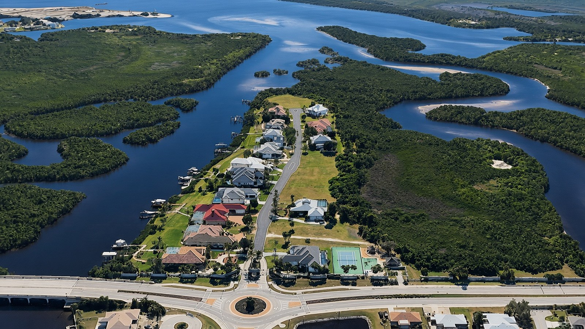
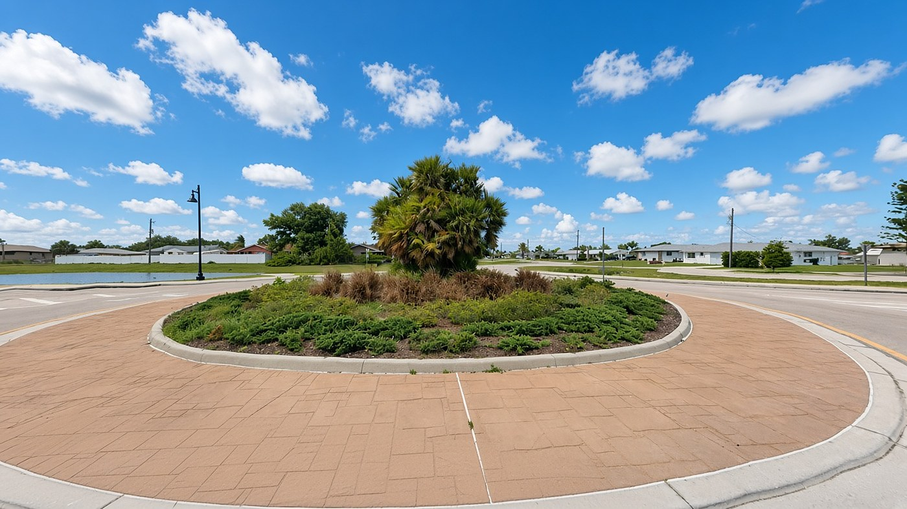

Draft preview for review. Not published. Rewrite Existing Page for /explore/port-charlotte/lea-marie-island/. Goes live 2026-12-10. Images shown from local copies. Rollout batch

Explore · Port Charlotte · Lea Marie Island
Lea Marie Island is one of the smallest named neighborhoods in Port Charlotte: 22 parcels on a single street, every home built since 2000.
With so few homes, a listing here is uncommon. This short guide covers what the county record shows and what to confirm before you buy. Nearby, Grassy Point offers a larger gated option on the harbor, and Explore Port Charlotte covers the rest of the area.
The short version
One street. Lea Marie Island Drive, off Edgewater Drive, ZIP 33952.
All newer. Homes built 2000 to 2026; median 2004.
Water lots. 67% of homes carry the county's waterfront flag.
Rare sales. Too few qualified sales to give a median.
22
parcels
18
single-family homes
$863,000
median county just value
2004
median year built
Source: Charlotte County Property Appraiser, parcel file and subdivision list (downloaded Nov 20, 2026).
Homes
Large newer homes, most with pools.
The median home has about 3,950 square feet of living area, and 89 percent have a private pool. County just values for homes run from about $690,000 to $1,103,000 across the middle half. The plat still shows 3 vacant lots, so a build site comes up now and then.
| Measure | Value |
|---|---|
| Parcels | 22 |
| Single-family homes | 18 |
| Vacant lots | 3 |
| Years built | 2000 to 2026 |
| Median county just value, homes | $863,000 |
| Homes with a pool | 89% |
County figures come from the Charlotte County Property Appraiser's public parcel file (downloaded November 20, 2026). Just value is the county's market value estimate on the latest certified roll, not an appraisal or a list price. Sale figures use each parcel's most recent recorded sale when that sale was qualified and dated 2025 or 2026.
Source: Charlotte County Property Appraiser, parcel file and subdivision list (downloaded Nov 20, 2026).

The roundabout at the Lea Marie Island Drive entrance on Edgewater Drive.
Before you buy
Confirm what you cannot see online.
Public information about Lea Marie Island is thin, so get the facts in writing early.
Ask what the association covers and whether a dock conveys.
Check the route and depth from the dock to open water.
Pull the FEMA zone and get quotes early.
Our insurance guide explains what drives premiums on waterfront homes.
Source: FEMA Flood Map Service Center.
FAQs
Where is Lea Marie Island?
Lea Marie Island is in Port Charlotte, ZIP 33952, reached by Lea Marie Island Drive off Edgewater Drive. It is a short drive from Grassy Point and the Charlotte Harbor shore.
How many homes are on Lea Marie Island?
The county roll lists 22 parcels on the plat: 18 single-family homes and 3 vacant lots.
How old are the homes?
Every home on the roll was built in 2000 or later. The median build year is 2004.
What do homes cost on Lea Marie Island?
The median county just value of a home is about $863,000. With so few parcels, sales are rare, and there were not enough qualified 2025 or 2026 sales to give a median.
Is Lea Marie Island gated?
Listing descriptions often mention a gate and private docks, but we did not find an official association website to confirm it. Ask for the association documents before you buy.
Weighing the move?
Start with our straight answer to Is Punta Gorda a good place to live? It covers the climate, storms and insurance, schools, healthcare, airports, beaches, and every neighborhood guide in one place.
Watching for a Lea Marie Island listing?
We can set an alert and pull the documents when one comes up. Call or text The Helgemo Team at (941) 770-2275.
The office is at 320 Cross Street, Punta Gorda, Florida 33950. You can also meet Brian Helgemo or read more about the team.
Sources: Charlotte County Property Appraiser, parcel file and subdivision list (downloaded Nov 20, 2026); FEMA Flood Map Service Center. Checked November 20, 2026.